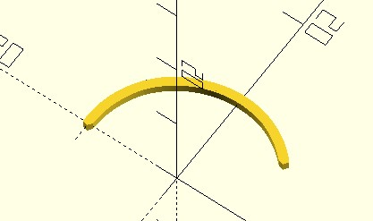

list 表示式
February 27, 2022在〈children 子模組〉自定義了 polyline_join 模組，可以指定一組點以及連接用的模組來建立線段，這組點要怎麼產生呢？總不能每次都手動輸入吧！
list 表示式
在〈OpenSCAD CheatSheet〉有個 List Comprehensions 區段，其中列出的語法，可以讓你指定 list 的元素該如何生成，最簡單的使用方式是：
indices = [for(i = [0:10]) 10 * i];
echo(indices); // ECHO: [0, 10, 20, 30, 40, 50, 60, 70, 80, 90, 100]
Comprehension 是理解、表示之意，先前談過，OpenSCAD 是具有函數式概念的語言，迴圈會是副作用的語法，list 表示式並不是迴圈，其實這個名詞來自於數學會使用集合建構式符號來描述集合（Set）。
對於 [for(i = [0:10]) 10 * i] 不是理解為迴圈，而是類似集合表示式 {10 * i | i ∈ {0,..,10}]}，不過 OpenSCAD 的 [for(i = [0:10]) 10 * i] 並不是表示集合，而是表示 list，也就是說 i 來自於 [0:10]，每個 10 * i 構成了一個新 list。
別管名詞定義了，來實際用 list 表示式搭配〈children 子模組〉的 polyline_join 模組畫個弧吧！
module polyline_join(points) {
for(i = [0:len(points) - 2]) {
hull() {
translate(points[i])
children();
translate(points[i + 1])
children();
}
}
}
module arc(radius, thickness, angle_degrees) {
points = [
for(a = [angle_degrees[0]:angle_degrees[1]])
radius * [cos(a), sin(a)]
];
polyline_join(points)
circle(thickness / 2);
}
arc(10, 1, [45, 180]);
OpenSCAD 的 list 可以作為向量，若乘上一個常數，就是進行向量縮放，也就是範例中 radius * [cos(a), sin(a)] 可以運作的原因，繪製的結果如下：

map/filter
方才的兩個範例，都是將一組值對應至另一組值，例如將 i 對應至 10 * i，將 a 對應至 radius * [cos(a), sin(a)]，由於 OpenSCAD 算是函數式典範，list 本身不可變，想將一組值對應至另一組值，經常就是透過 list 表示式。
你也可以根據條件來進行對應，例如，除了 11 的倍數，其他都對應至 0：
echo([for(i = [0:100]) i % 11 == 0 ? i : 0]);
在 list 中 if/else 可以作為運算式（也只有在 list 中，if/else 才能作為運算式），也可以這麼寫：
echo([for(i = [0:100]) if(i % 11 == 0) i else 0]);
如果這時若省略 else，就會有過濾元素的效果，例如，只留下 11 的倍數：
echo([for(i = [0:100]) if(i % 11 == 0) i]);
C-like 風格
list 表示式經常搭配範圍語法，然而這就會有個問題，若是想要遞減運算呢？例如從 10 到 0？範圍語法的 step 若指定負數，OpenSCAD 會產生警訊：
WARNING: begin is smaller than the end, but step is negative
若需要遞減運算，基本上就是變數減去範圍的終值：
echo([for(i = [0:10]) 10 - i]);
這很不直覺，另一個方式是使用遞迴，例如：
function list(from, step, to) = _list(step, to, from);
function _list(step, to, i) =
i == to ? [i] : concat([i], _list(step, to, i + step));
echo(list(10, -1, 0));
其中的 concat 可以將多個 list 進行串接，傳回新的 list 作為結果。
為了能更簡單地表示遞迴版本，OpenSCAD 提供了 C-like 風格的 list 表示式：
echo([for(i = 10; i >= 0; i = i - 1) i]);
最後的 i = i - 1？不是說 OpenSCAD 具有函數式概念，不要覺得它可以 i = i - 1 比較好嗎？嗯…都說 C-like 風格的 list 表示式，是為了更簡單地表示遞迴版本，請你將 i = i - 1 想成是接下來遞迴呼叫時，參數 i 會是目前的 i + 1 值。
each 逐一展開
在 [] 可以使用 each，將指定的 list 逐一展開為 each 所在 [] 的元素，例如 [each [1, 2, 3]] 結果會是 [1, 2, 3]…呃？何必多此一舉，重點在於 [] 中可以有多個 each，以逗號區隔，因此可以達到 concat 的效果，each 也可以與目前元素結合：
lt1 = [1, 2, 3];
lt2 = [4, 5, 6];
echo(concat(lt1, lt2)); // ECHO: [10, 9, 8, 7, 6, 5, 4, 3, 2, 1, 0]
echo([each lt1, each lt2]); // ECHO: [10, 9, 8, 7, 6, 5, 4, 3, 2, 1, 0]
echo([0, each lt1]); // ECHO: [[0, 1, 2, 3]
也就是說，視可讀性而定，某些時候可以用來取代 concat，例如方才的 list 函式可以如下實作：
function list(from, step, to) = _list(step, to, from);
function _list(step, to, i) =
i == to ? [i] : [i, each _list(step, to, i + step)];
echo(list(10, -1, 0));
each 也可以與 list 表示式結合使用，例如，有時候你需要產生一對頂點：
r1 = 10;
r2 = 5;
angle_degrees = [45, 180];
points = [
for(a = [angle_degrees[0]:angle_degrees[1]])
let(p = [cos(a), sin(a)])
[
r1 * p,
r2 * p
]
];
echo(points);
這會產生 [[[7.07107, 7.07107], [3.53553, 3.53553]], [[6.94658, 7.1934], [3.47329, 3.5967]], ...]，也就是說 list 每個元素，會包含兩個點，如果你實際上想要的是將全部的點展開，讓 list 中每個元素就是一個點的話，可以使用 each 展開：
r1 = 10;
r2 = 5;
angle_degrees = [45, 180];
points = [
for(a = [angle_degrees[0]:angle_degrees[1]])
let(p = [cos(a), sin(a)])
each [
r1 * p,
r2 * p
]
];
echo(points);
產生的結果就會是 [[7.07107, 7.07107], [3.53553, 3.53553], [6.94658, 7.1934], [3.47329, 3.5967], ...]，每個元素都是一個點了。